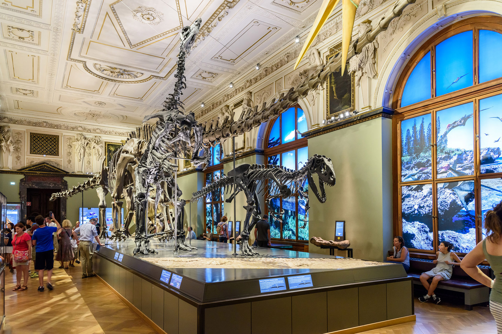

Unul dintre cele mai frumoase orașe din Europa
Muzeul de Istorie Naturală din Viena este unul dintre muzeele importante ale lumii, cele mai vechi colecții de artefacte fiind adunate cu peste 250 de ani în urmă. Începând din 2011, muzeul adăpostește aproximativ 30 de milioane de obiecte și numărul este în creștere. În spatele scenei colecțiile cuprinzând aproximativ 25 de milioane exemplare și artefacte sunt baza esențială pentru activitatea a peste 60 de oameni de știință importanți. Domeniile lor principale de cercetare acoperă o gamă largă de subiecte, de la originile sistemului nostru solar și evoluția animalelor și a plantelor până la evoluția umană, precum și tradițiile și obiceiurile preistorice.
Clădirea principală a muzeului este un palat elaborat, care adăpostește aceste colecții în continuă creștere, de la deschiderea pentru public în anul 1889 ca Muzeu Imperial de Istorie Naturală. Cu toate acestea, unele dintre colecții au fost mutate din clădiri chiar mai vechi, precum Hofbibliothek care conținea colecțiile Cabinetului de Zoologie (în germană Tierkabinett).
Clădirea cu ornamente decorative bogate, mobilier și exponate prețioase au transformat muzeul într-un "Muzeu al muzeului", pentru conservarea patrimoniului cultural-istoric.
Exponate celebre și de neînlocuit, ca de exemplu Venus din Willendorf vechi de 25.000 de ani, și un schelet de dinozaur Diplodocus, plus animale dispărute sau specimene de plante de acum 200 de milioane de ani precum marea vacă a lui Steller, sunt prezentate în cele 39 săli. Prezentarea contemporană prin intermediul expoziției tehnologiei expoziționale moderne a devenit posibilă fără distrugerea structurilor istorice din clădire.

Muzeul de Istorie a Artei din Viena a fost înființat la scurt timp după campaniile militare conduse de Napoleon în Europa.
Ne aflăm la începutul secolului al XIX-lea. Dinastia Habsburgilor este îngrijorată de soarta patrimoniului artistic al familiei, mai ales pentru comoara imensă a Sfântului Imperiu Roman și Ordinului Lânii de Aur.
Această comoară era împărțită între trei orașe: Castelul Ambras de lângă Innsbruck, Nürnberg și Aachen. Habsburgii au ordonat ca toate desenele să fie aduse la Viena și drept urmare obiectele de artă sunt transferate în Palatul Belvedere, unde se aflau deja câteva colecții de pictură.
Comorile au supraviețuit distrugerilor provocate de trupele lui Napoleon în timpul campaniilor militare și au fost expuse publicului cu ocazia Congresului de la Viena. Cetățenii și delegații străini au rămas profund impresionați de valoarea lor.
Kunsthistorisches Museum, găzduit de o clădire de pe Bulevardul Ring, ce aduce cu un palat, este unul dintre cele mai importante muzee de artă din lume. Clădirea în care se află este ea însăși un obiectiv turistic. Muzeul este vizitat de peste 600.000 de oameni anual. A fost construit, ca și alte muzee din Viena, pentru a găzdui imensa colecție de obiecte de artă a Habsburgilor. Kunsthistorisches Museum a fost deschis în 1891, în același an în care a fost deschis și Naturhistorisches Museum (Muzeul de Istorie Naturală), de către împăratul Franz Joseph al Austriei și Ungariei. Cele două muzee au exterioarele similare și se află unul în fața celuilalt în Piața Maria Tereza. Ambele clădiri au fost construite între anii 1872-1891.
Colecțiile muzeului sunt: Egipt și din Orientul Apropiat; Grecia și Roma Antică; Sculptura și Arta Decorativă, Colecția de Numismatică și Bibliotecă. Interiorul clădirii este și el spectaculos fiind decorat cu marmură, și multe ornamente aurite sau picturi. Clădirea are deasupra sa un dom ce ajunge la o înălțime de 60 de metri.
Muzeul Albertina se află în Innere Stadt, centrul orașului Viena. Denumirea muzeului provine de la fondatorul său, Prințul Albert de Saxonia, Duce de Teschen.
În sălile palatului-muzeu sunt expuse peste 65.000 de desene și aproximativ 1 milion de lucrări de grafică, de la vechii maeștri la artiști moderni. Printre numele de referință se regăsesc Albrecht Dürer, Leonardo da Vinci, Michelangelo Buonarroti, Rembrandt, Rubens, Claude Lorrain, Eugène Delacroix, Édouard Manet, Paul Cézanne.
Din artiștii secolului XX, sunt reprezetați în special cei austrieci, și anume Egon Schiele, Gustav Klimt sau Oskar Kokoschka.
Din creațiile artiștilor români sunt prezentate lucrări ale lui Ignat Bednarik (desene și acuarele), respectiv gravuri ale lui Nicolae Brana.
În fața clădirii muzeului a fost amplasată o lucrare de sculptură monumentală, și anume memorialul dedicat victimelor atrocităților din cel de al doilea război mondial, realizat de sculptorul Alfred Hrdlicka.